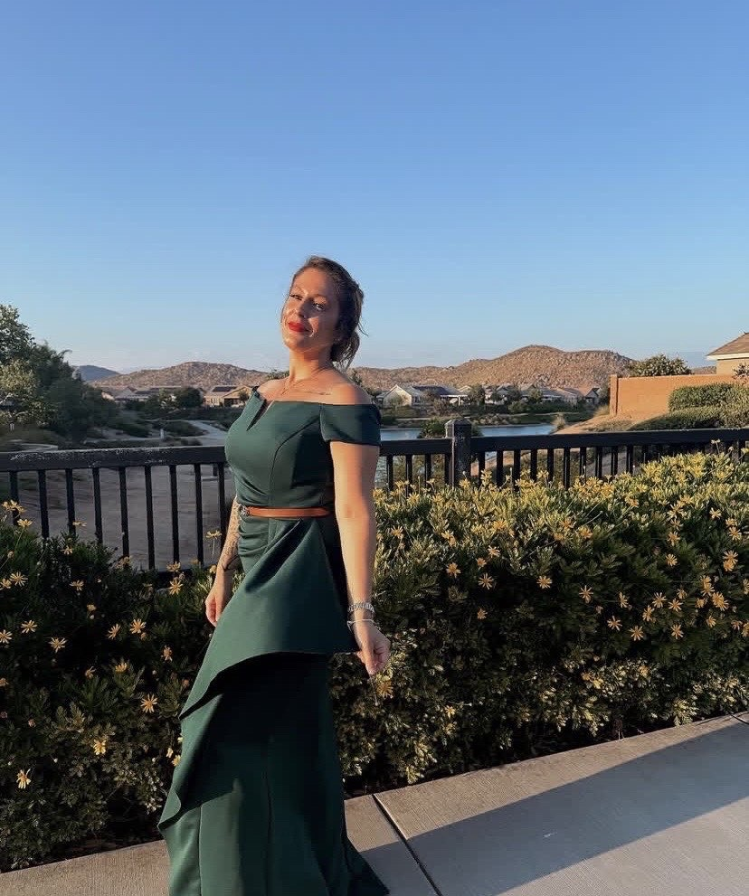
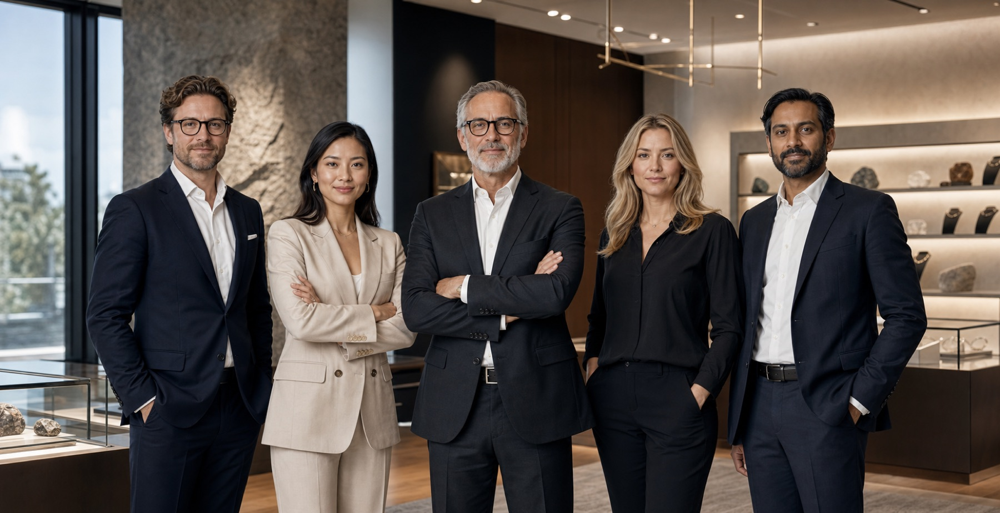
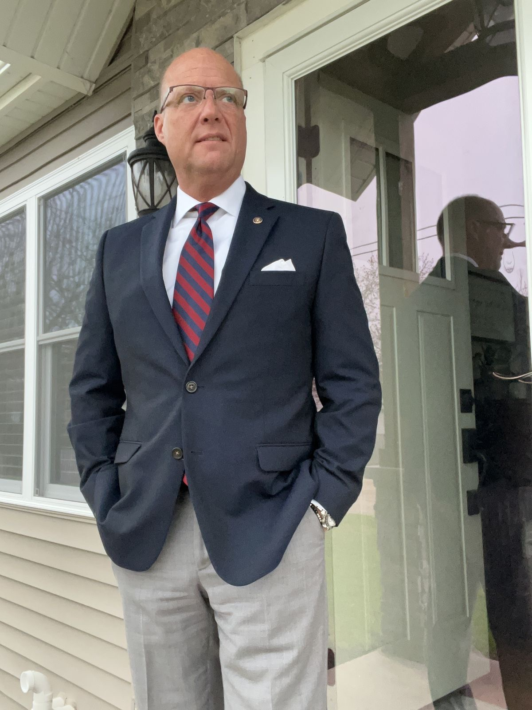

Maria Cox Walker
Chief Executive Officer and next of kin, leading the company after Kenneth Cox Walker’s death in 2019 while guiding its modern strategy, client vision, and long-term family legacy.

Leadership Team
Cox Walker Jewelry LLC is led by a close family leadership circle shaped by the standards established by its founder, Kenneth Cox Walker. Today the company is directed by Maria Cox Walker, with Robert Cox and Mavis Cox helping preserve the operational discipline, family values, and long-view thinking that define the business.

Chief Executive Officer and next of kin, leading the company after Kenneth Cox Walker’s death in 2019 while guiding its modern strategy, client vision, and long-term family legacy.
Founder and late Chief Executive Officer, the English-born entrepreneur who moved to the United States and established the company in 1996 with a vision rooted in provenance, trust, and family stewardship.

Director of Sourcing and Operations, supporting supplier relationships, evaluation standards, operational structure, and the disciplined handling expected across the company’s gemstone pipeline.
Director of Family Stewardship and Community Relations, helping maintain the company’s culture of responsibility, continuity, and respectful engagement across both internal operations and external relationships.